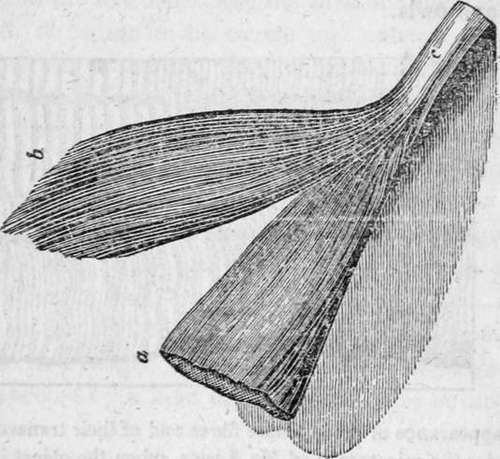
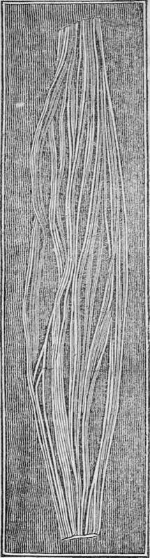
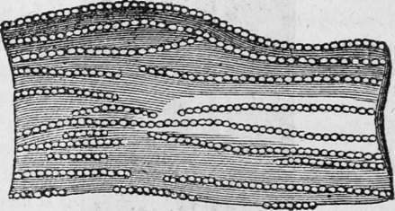
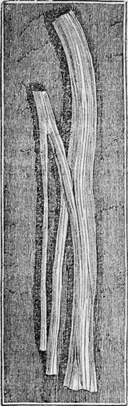

Structure Of The Human Body Continued. Part 4
Description
This section is from the book "Human Physiology For The Use Of Elementary Schools", by Charles Alfred Lee. Also available from Amazon: Human Physiology, for the Use of Elementary Schools.
Structure Of The Human Body Continued. Part 4
26. The muscular fibres are every where penetrated by cellular tissue and numerous blood vessels and nerves. The colour of the muscle of course varies, according to the quantity and quality of the blood. In adult animals it is of various shades of red ; in young animals, of a cream colour, as in veal; in birds, it varies in different muscles ; in fowls, for example, it is white on the breast, and a deep brown on the legs ; while in fishes, it is bluish, or white, etc.
27. No part of the body except, perhaps, the organs of sense, is so abundantly supplied with blood vessels and serves, as the muscular tissue. There is reason to believe that every filament, however fine, is provided with the ultimate branch of an artery, vein, and nerve. The direction of the fibres of muscles varies ; in some, being parallel; in others, radiating in different directions. In some instances, they form nearly or quite a cirele, as the muscle which closes the eye, and those of the intestinal canal; in others, they are penniform, or having their fibres disposed like those forming the feathery part of a quill.
Two portions of muscle ; one of which, a, is covered with membrane ; the other, by is uncovered ; e, the muscular fibres terminating in tendon.
27. Muscular tissue is supposed to consist chiefly of fibrin, though some chemists state that it contains albumen, gelatine, and osmazome. These latter substances however, are probably obtained from the cellular tissue which encloses and dips down between the fibres of muscles. Fibrin contains a larger proportion of azote, the element peculiar to the animal body, than any other animal substance. The flesh ©f young animals affords a large proportion of gelatine, while it is deficient in fibrin-in adult animals, the fibrin predominates, and the gelatine is deficient.
28. The peculiar property of muscular tissue is vital, and consists in the power of diminishing its length, or shortening on the application of stimulus. All the motions of the body are performed by means of it, and without its incessant action, respiration, digestion, nor circulation could be carried on for a moment. Tendons, ligaments, cartilages, and bones seem to be mechanical contrivances to aid the muscles in accomplishing their varied purposes, so that the only source of motion in the body is muscular tissue, and the only mode in which motion is generated is by contractility.
29. The last primary tissue which we have to describe, is termed nervous. It consists of a soft and pulpy matter, of a brownish white colour, and appears to be composed of solid, elongated threads, differing in thickness from that of a hair to the finest fibre of silk. Like the muscles, the nerves are enclosed in a sheath of condensed cellular membrane, called neurilema, or nerve coat; and like them also, each nerve is composed of many bundles ; these of many fibres ; and the fibres of many filaments. In one respect the nervous fibres differ from the muscular, and that is, while the muscular fibres generally run parallel to each other, those of the nerves cross and penetrate each other, so as to form an intimate interlacement, as represented on the following page. When we come to describe the vascular system, it will be seen that either all the vessels proceed from one large trunk, which goes on progressively to divide and subdivide, until its branches become so minute as to be invisible ; or that they arise by numerous and invisible branches, which unite to form larger and larger vessels, until they ultimately constitute only a few trunks. But the muscular and nervous filaments never divide and subdivide in this manner. It is the opinion of the best anatomists, that there is a diameter beyond which they no longer diminish. That diameter they maintain is quite uniform in each spinal marrow, nerves and their ganglions. The nervous tissue appears to consist of two substances, which as far as the eye can distinguish, appear to be entirely distinct from each other. The one is called cineritious, or gray, from its colour; from its position, cortical, and from its consistence pulpy. This last appears to be composed chiefly of blood vessels. The other is termed white, or medullary. It is of firmer consistence than the pulpy. This is decidedly fibrous in its nature. In every part of the nervous system which constitutes a distinct nervous apparatus, both substances are conjoined. Neither the pulpy, nor the fibrous alone, forms a distinct organ ; the union of both is neeessary to constitute an instrument capable of performing a specific function.
Nervous fibres, deprived of their neurilema and unravelled, showing the smaller threads, or filaments, of whieh the fibres consist.
30. The nervous tissue is also abundantly supplied with blood vessels, like the muscular ; so that there is not a fibre or filament, however minute, which is not supplied by a distinct blood vessel. The nervous structure forms the brain.
Ultimate fibres of nerve highly magnified ; showing the strings of globules of which they consist.
31. Much controversy exists in relation to the shape of the ultimate particles of nervous matter ; but while microscopical observations differ as much as they have done hitherto, the question may fairly be considered as unsettled. The common opinion is, that the ultimate filaments of which they are composed, are formed of globules of extreme minuteness. But then, when we consider the peculiar difficulties attending investigations of this nature, that they require unwearied perseverance, extreme accuracy, great patience, and a dexterity with the hand, united with a delicate discrimination of the eye, that belong to few:, and when we consider moreover, that these very endowments can only be acquired by long practice, we shall be led to pause, before we adopt the opinions of every microscopical enthusiast who enters on this very extensive, and deeply fascinating field of discovery.
Portion of the trunk of a nerve dividing into two branches.
Questions
Describe the fibrous structure. What are its uses ? What are ligaments ? What is a capsular ligament ? What use do ligaments serve ? When sprained, what is a good remedy ? What is a tendon or sinew ? Where are they found ? What their use ? Of what composed ? Have they much sensibility ? Why are bones sometimes placed in a tendon ? What use does the knee pan serve ? Describe the cartilaginous tissue. What are its uses ? How may its structure be shown ? What is the elastic tissue ? Where is it found ? What are its uses ? What constitutes the most solid portion of the system ? What are the uses of the bones ? How many are there in the human skeleton ? Is bone supplied with blood vessels ? What is the different density of bones owing to ? What situation do the bones occupy in man ? In the Crustacea and insects ? Describe the structure of the long bones ?-of the flat bones ? What is the chief use of the flat bones ? What covering have the bones ? What is the structure of the periosteum ? What its use ? How are the bones nourished ? What effect has madder upon bones when taken internally ? What is marrow ? Where is it deposited ? What its use ? At what period of life is it most abundant ? What is the composition of bone. What pro portion is animal matter ? What earthy ? How are these different substances shown ? Are their proportions affected by age or health ? What is the consequence when the earthy matter is deficient ? What when the animal ? How are spinal distortions best remedied ? How is bone formed ? Are all the bones formed at the time of birth ? What is muscular tissue ? By what property is it distinguished ?-Of what composed ? What are fibres ? What bundles ? How do the fibres appear? Do all muscles possess the fibrous arrangement? To what is the colour of muscle owing ? Of what colour is the muscle of fishes ? Of what shape are muscles ? What is the chemical composition of muscular tissue ? Does age affect the quantity of fibrin in animals ? What peculiar property does muscular fibre possess ? What its use ? Describe the nervous tissue. What is the neurilema? Does nervous tissue abound with blood vessels ? What does it form ? How many kinds of substance is contained in it ? What is the cineritious ? What their cortical portion ? Does either alone form any organ ? What is said of the shape of the ultimate particles of matter ?
Continue to:
- prev: Structure Of The Human Body Continued. Part 3
- Table of Contents
- next: Chapter V. Chemistry Of The Human Body. Ultimate And Organic Elements
Tags
humans, anatomy, skeleton, bones, physiology, organs, nerves, brain